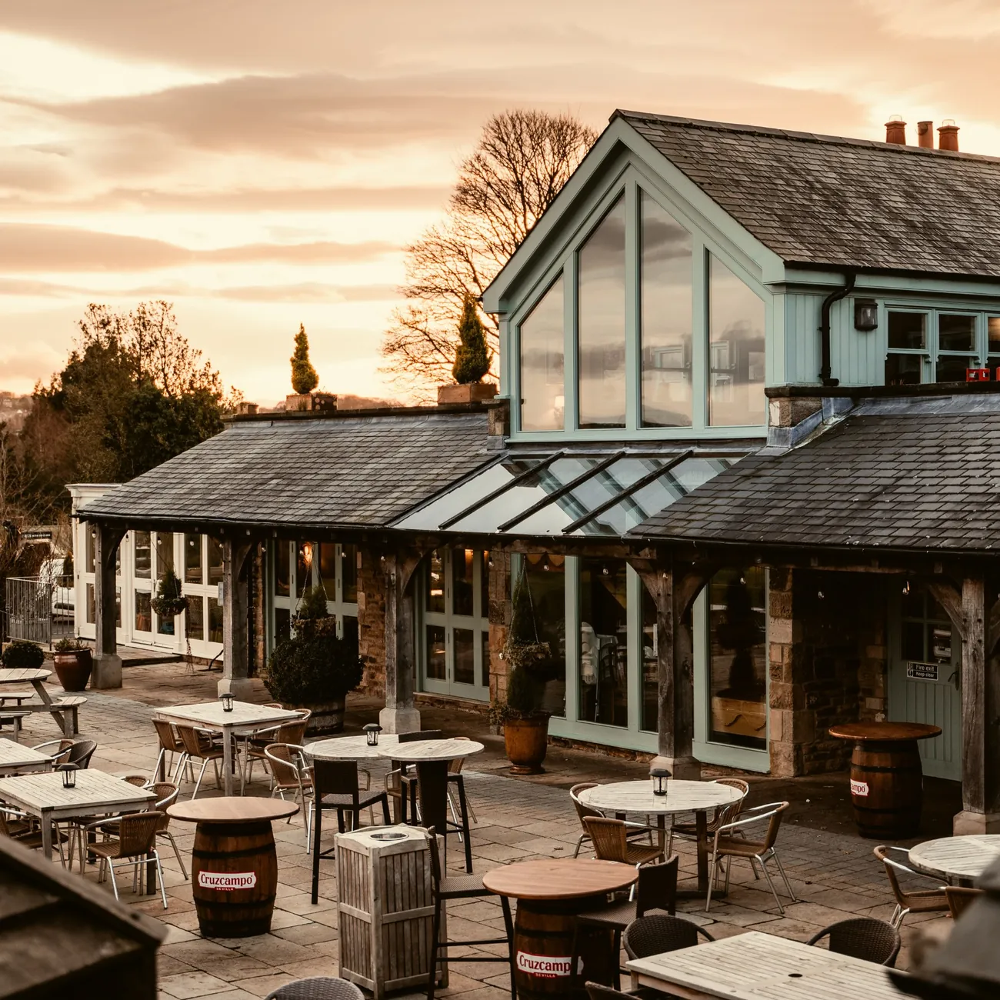
Beamish | Red Row Estate
The Winter
Menu
Seasonal cooking • Country pub favourites
A taste of Red Row Estate
Scroll

Seasonal cooking • Country pub favourites
A taste of Red Row Estate
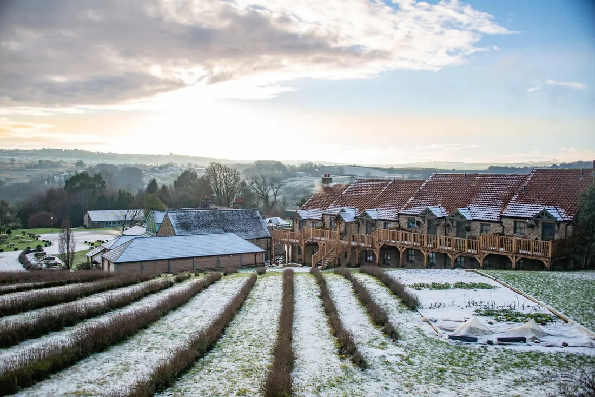
Originating over 300 years ago as a public house on the historic Red Row Estate, the Black Horse Beamish has flourished into the charming County Durham pub, restaurant, luxury getaway and events venue you have come to visit today.
We pride ourselves on creating wonderful food, crafted from the finest local produce and herbs grown here on the Red Row Estate, and delivering exceptional service. From our exquisitely prepared food menus to our in-house roasted coffees and handpicked wine list, we’re proud to serve only the very best of ingredients against a stunning countryside backdrop.
Whether this is your first visit, or you’re a regular guest here at the Black Horse Beamish, we look forward to looking after you today.
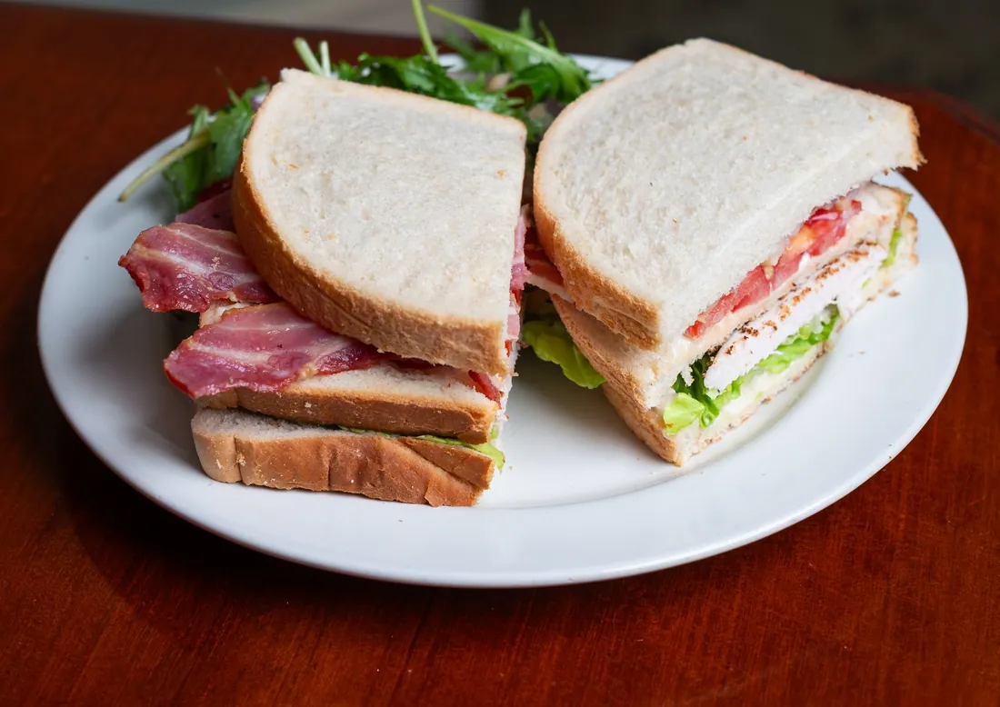
Between noon and five, Monday to Saturday, there is no reason to rush. The kitchen sends out sandwiches worth sitting down for.
Start with the hot ones. A Grilled Cheese & Roasted Ham£11.95 is the comfort you were hoping for, and the Tuna Melt£11.95 and Bacon & Brie£11.95 are close behind. The Chunky Fish Fingers£11.95 are exactly as generous as they sound, while the Grilled Halloumi & Cranberry(V)£10.95 is there for anyone who would rather skip the meat.
Alongside, add French Fries(VG) (GF)£3.95 or take the more indulgent route with Parmesan and Truffle Fries(V) (GF)£4.95.
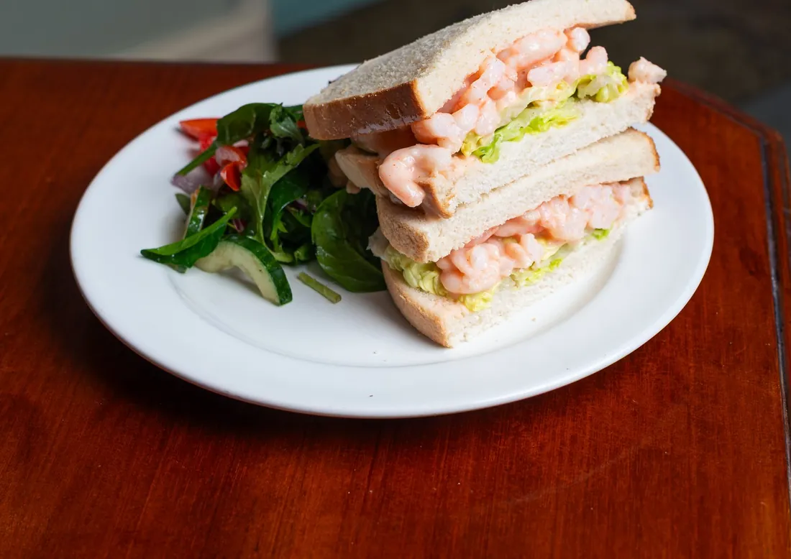
Some days call for something cooler and quieter, and the cold sandwiches deliver, each served with a salad garnish and coleslaw.
The Tuna Crunch(GFA)£9.45 and the Ham & Chutney(GFA)£9.45 are the dependable pair, and the Cheese Savoury(V) (GFA)£9.45 keeps things proudly traditional. The Prawn Marie Rose(GFA)£9.95 is a little more elegant, and the Turkey Club(GFA)£9.95, stacked high, is for when you are properly hungry.
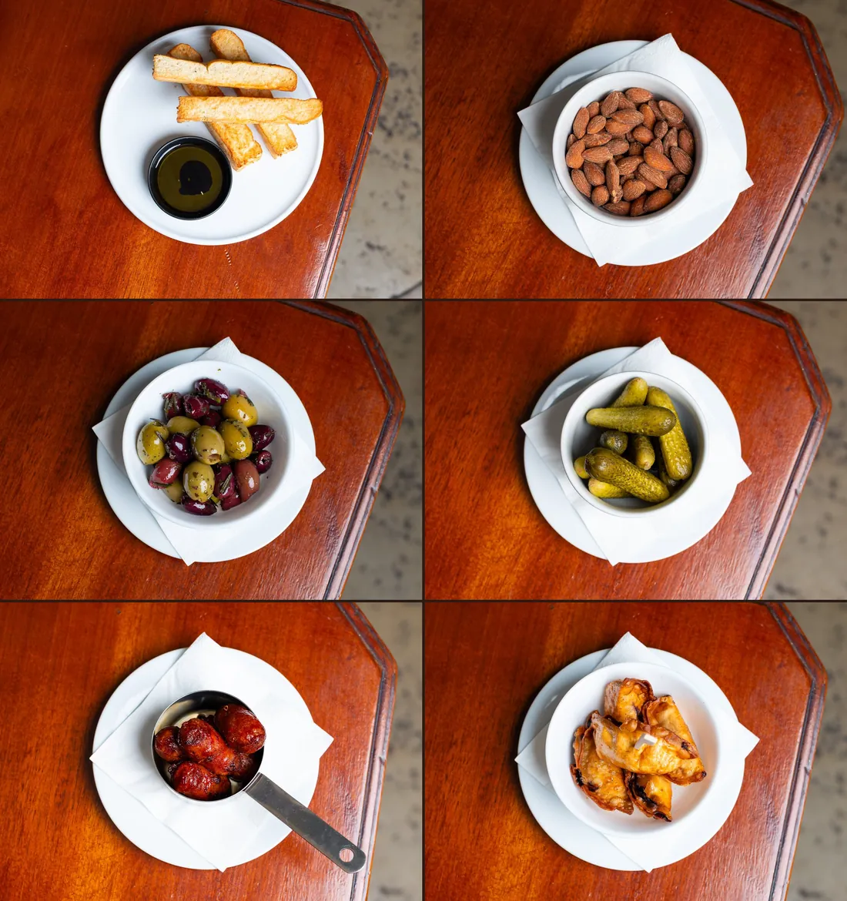
Take a seat, order something to drink, and let us bring you a little something while you browse.
The Rosemary Focaccia(VG)£5.45 arrives with olive oil for dipping and Red Row Organics rosemary.* The Maple Smoked Almonds(VG) (GF)£4.45 are sweet, smoky and lightly seasoned, and the Mixed Olives(VG) (GF)£4.45 and crisp Cornichon Pickles(VG) (GF)£4.45 are the perfect companions to a first drink.
For something warm, there is Basque Chorizo£6.45, Spanish-style and served warm, or the Duck Gyoza & Hoisin£6.45, dumplings with a hoisin dipping sauce.
* Red Row Organics herbs and Red Row Estate produce are used when in season and available.
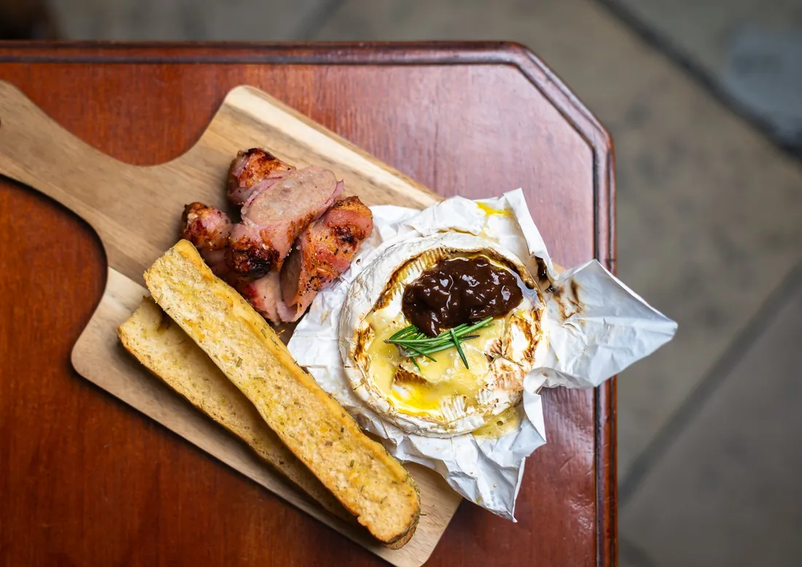
Every good meal opens with a decision. Ours tend to lean on the season.
The Butternut Squash Soup(V) (GFA)£7.95 is roasted and blended with Red Row Organics herbs* and a hint of spice, served with warm, crusty bread. For something from the sea, the Seafood Cocktail(GFA)£11.95 brings prawns, crayfish tails and smoked salmon together in our Marie Rose sauce, while the Garlic & Chilli Prawns(GFA)£10.95 are king prawns, pan-roasted with fresh chillies on charcoal linguine and finished with wild garlic oil and home-grown parsley.*
The Tempura Tenderstem Broccoli(V) (GFA)£8.95 comes drizzled with our own hot honey sauce, and the Brie & Bacon Millefeuille£9.95 layers golden puff pastry, smoked bacon and creamy Brie beneath our own cranberry sauce. Dining as a pair? The Baked Camembert(GFA) (VA)£14.95, infused with truffle and rosemary,* is made for two, with dipping bread, pigs in blankets and a sweet red onion chutney.
* Red Row Organics herbs and Red Row Estate produce are used when in season and available.
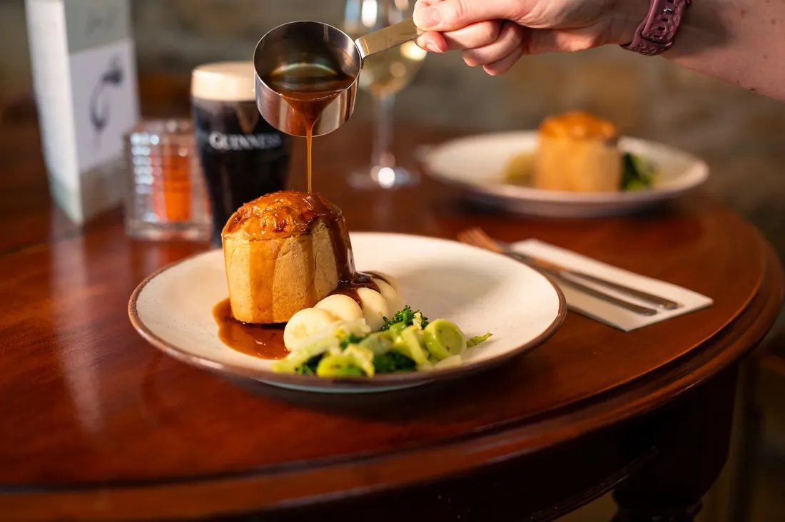
Some dishes need no introduction, only a very good version of themselves.
Our hand-made Bombardier Steak & Ale Pie£18.95 is filled with tender beef and ale gravy and comes with mashed potatoes, winter green vegetables and a beef bone gravy. The Fish & Chips(GFA)£19.95 is a crisp battered haddock fillet beside our triple-cooked chips, with mushy peas, tartare sauce and a wedge of lemon, and the Small Fish & Chips(GFA)£13.95 is there for smaller appetites.
The Forester’s Chicken£19.95 is pan-roasted supreme of chicken breast with a buttered potato fondant, steamed tenderstem broccoli and a wild mushroom crème.
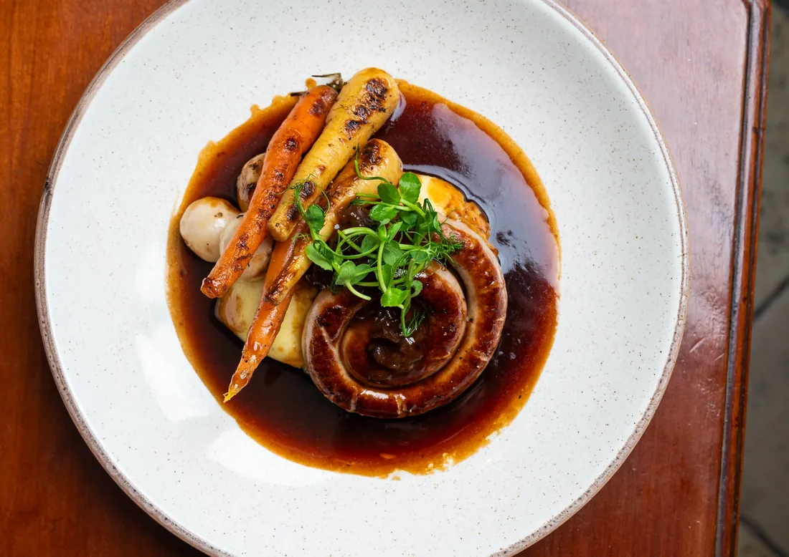
Where the harvest allows, a little of the Red Row Estate finds its way onto the plate.
The Cumberland Ring£19.95 pairs local Cumberland sausage with creamed mashed potatoes, winter root vegetables, red onion chutney and a rich bone gravy, and the Bacon Chop£19.95 is a thick-cut butcher’s chop with a fried Red Row Estate hen’s egg,* garden peas and triple-cooked chips. The King Prawn & Chorizo Linguine£20.95 binds king prawns and Basque chorizo in a creamy chorizo sauce, finished with petit pois, Parmesan and Red Row Organics herbs.*
Our burgers come with fries, onion rings, coleslaw and garnish. The Black Horse Smash Burger(GFA)£18.95 stacks two 4oz hand-made patties with streaky bacon, Monterey Jack, house relish, baby gem, beef tomato and pickles, and the Black Horse Plant Burger(VG)£18.95 adds sriracha mayonnaise to a vegan brioche-style bun.
* Red Row Organics herbs and Red Row Estate produce are used when in season and available.
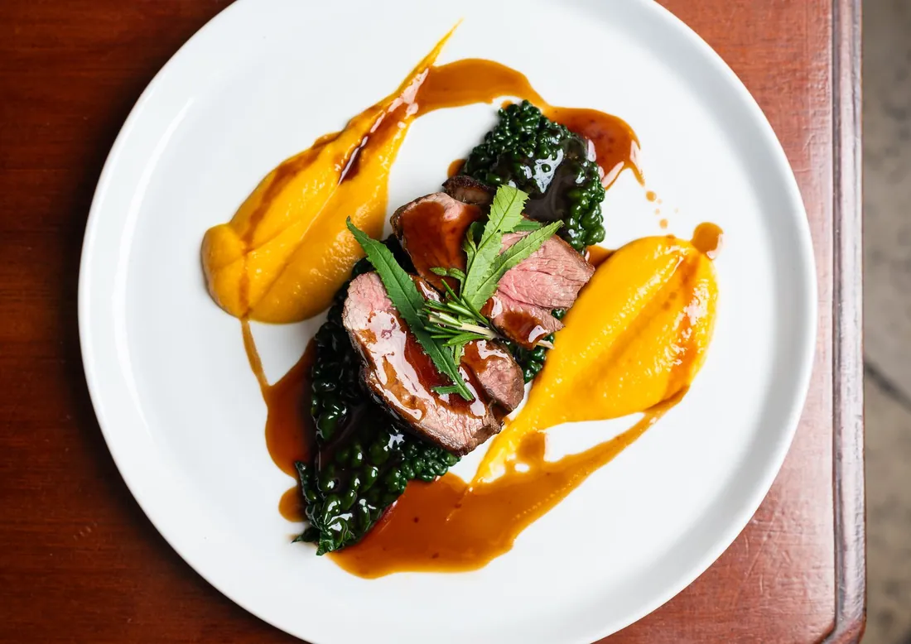
When the evenings draw in, this is the page to turn to.
The Rump of Lamb(GF)£25.95 comes with crispy potatoes, a spiced butternut squash purée and braised cavolo nero, finished with a red wine jus infused with Red Row Organics rosemary.* The Braised Featherblade of Beef(GF)£23.95 is slow-braised and served with horseradish and parsley mash, buttered winter greens and a rich red wine jus. The Roasted Poussin(GF)£23.95 is stuffed with lemon and Red Row Organics herbs,* with a cassoulet of mixed beans, new potatoes and courgettes.
From the water, the Fillet of Scottish Salmon(GF)£23.95 is pan-fried and set on a salad of baby roots, olives, cherry tomatoes, green beans and new potatoes. The Beef Goulash(GF)£20.95 is a Polish take on a classic: chunky vegetables and beef, a potato pancake and a spoonful of crème fraîche.
For vegetarians, the Chestnut Pesto Gnocchi(V) (VG)£19.95 brings homemade seasonal pesto from Red Row Organics herbs* and oven-roasted red peppers, and the Butternut Squash Ravioli(V)£19.95 fills spinach and ricotta ravioli with braised squash purée, tarragon oil* and wild pea shoots.
* Red Row Organics herbs and Red Row Estate produce are used when in season and available.
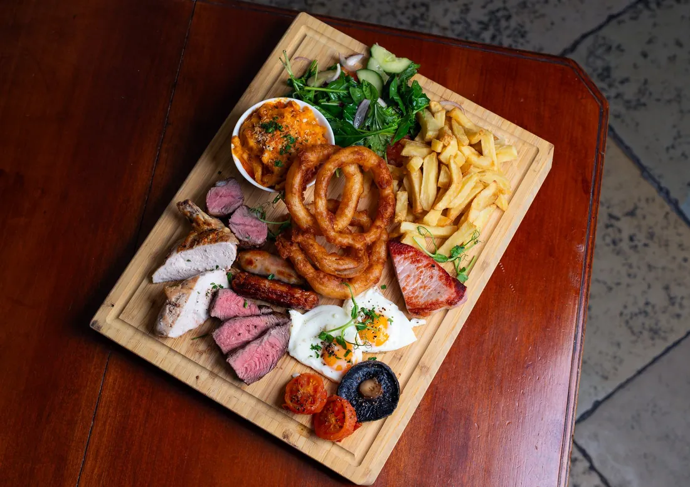
A great steak asks very little of you: a choice of cut, a choice of cooking, and an appetite.
Every steak is served with your choice of two sides, onion rings, a flat mushroom and the sauce of your choosing. The 340g Flat Iron Steak(GFA)£39.95 and the 340g Ribeye Steak(GFA)£39.95 are the generous choices, and the 230g Fillet Steak(GFA)£44.95 is the refined one.
For the truly hungry, The Black Horse Butcher’s Block(GFA)£46.95 brings 4oz of lamb rump, 4oz of flat iron, butcher’s pork sausages, a supreme of chicken breast, half a bacon chop, two Red Row Estate hen’s eggs,* onion rings, chorizo mac & cheese and a dressed salad, all in a single order.
* Red Row Organics herbs and Red Row Estate produce are used when in season and available.
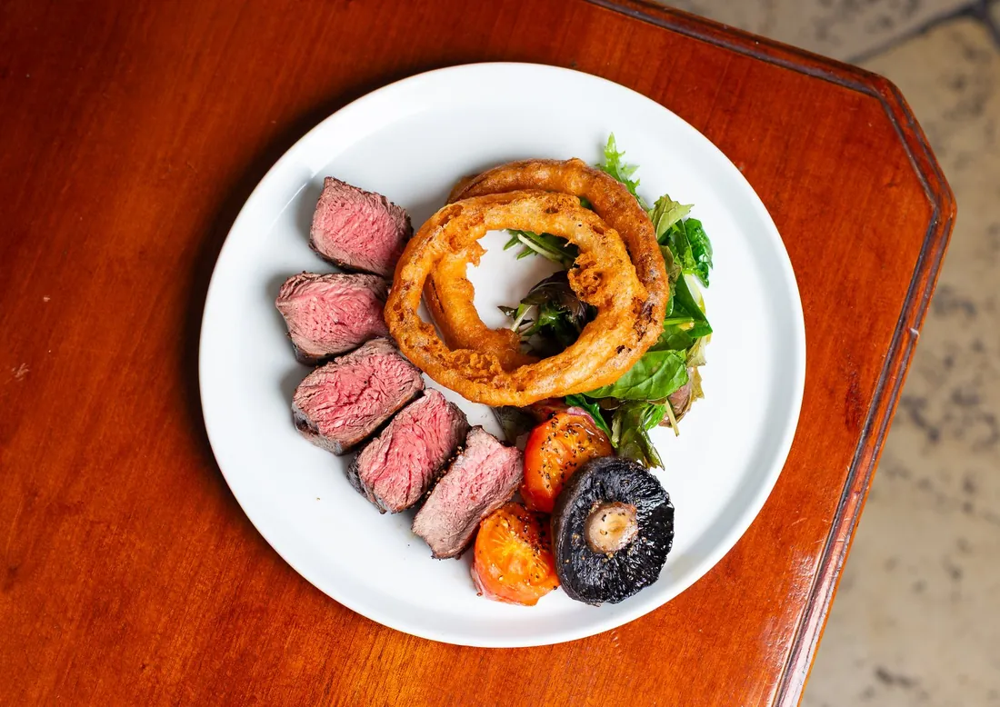
Our sirloin is dry aged in house and cut to the size of your choosing.
The Hand-carved Sirloin(300g**)from £34.95 starts at 300g and grows by 50g at a time, at £5.00 for each additional 50g, up to 600g, and comes with the same two sides, onion rings, flat mushroom and sauce.
Sides to choose: Skinny Fries or Triple-cooked in-house cut chips(VG) (GF)£4.95, Parmesan and Truffle Fries(GF)£5.95, Onion Rings£4.95, House Salad(VG) (GF)£3.95, Buttered Winter Greens(VG) (GF)£4.95, Grilled Halloumi(V)£4.95, Chorizo Mac & Cheese(VG) (GF)£5.95 and Garlic & Herb Sautéed Potatoes£5.95.
To finish the plate, a sauce at £3.95: Diane, Peppercorn, Garlic Butter or Blue Cheese, or a Red Wine Jus or Béarnaise.
** As our hand-carved steaks are cut fresh for your order, the uncooked weight may vary by a small margin.
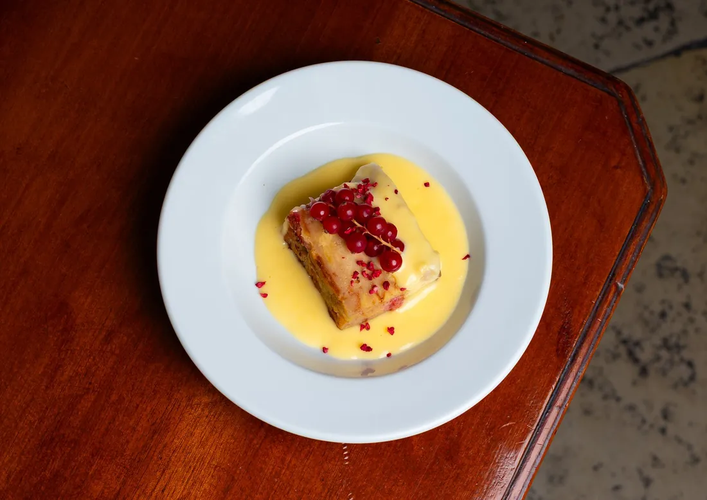
There is always room for one more thing, especially a warm one.
The Sticky Toffee Pudding£7.95 arrives with Thunder & Lightning ice cream, and the Red Row Fruit Crumble£7.95 and Redcurrant Bread & Butter Pudding£7.95 are each served with custard. If you would prefer something lighter, the Gingerbread & Lime Pearl Cheesecake£8.95 comes with lime sorbet, and the Salted Caramel & Chocolate Tart£8.95 with mint choc ice cream.
Or keep it simple with a Selection of Ices£6.95, and a cup of our in-house roasted coffee alongside.
* Red Row Organics herbs and Red Row Estate produce are used when in season and available.
The Black Horse Beamish Estate is the perfect gateway to Durham, Northumberland, Newcastle and the Dales.
Beamish Museum is a two minute drive away, and a day out for the whole family. The Tanfield Railway, the world’s oldest working railway, is a fifteen minute walk up the back road, and Causey Arch, the world’s oldest surviving railway bridge, was built in 1725. Durham City, with its cathedral and castle above the River Wear, is a short drive.
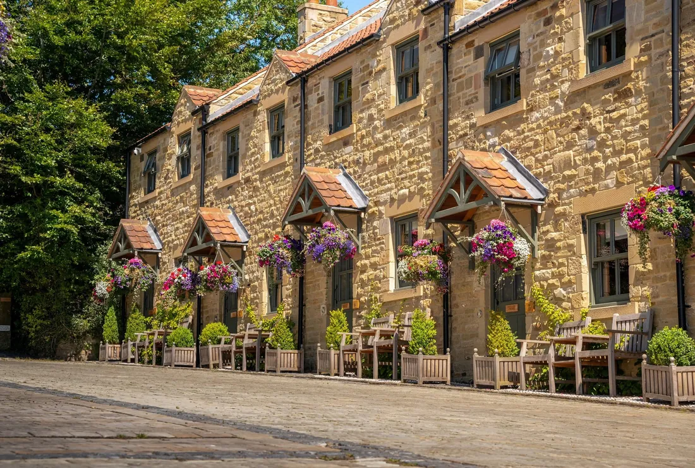
A pub, a restaurant, a luxury getaway and an events venue, all on the Red Row Estate.
Stay in the Old Red Row Rooms, the Rosemary Suite or Huckleberry Cottage, and wake up to the County Durham countryside. Celebrate in the Orchard Marquee, the George Ridley Suite and the estate itself.
The Black Horse Beamish also serves breakfast, Sunday lunch and afternoon tea, with Steak Night Fridays, festive dining and live events through the year. Find the details at blackhorsebeamish.co.uk.
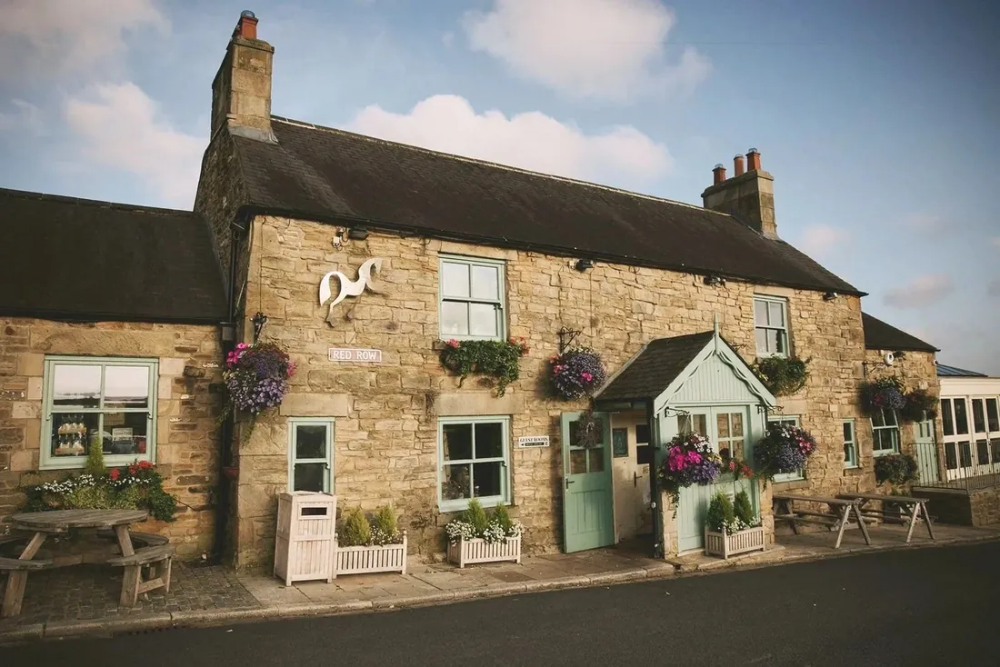
Red Row Estate, Beamish
County Durham, DH9 0RW
Telephone+44 (0) 1207 232569
Reception & Staystay@blackhorsebeamish.co.uk
Bar & Restaurantrestaurant@blackhorsebeamish.co.uk
Onlinewww.blackhorsebeamish.co.uk
If you have an allergy or a dietary requirement, please tell a member of the team before you order. A 10% discretionary service charge is added to each bill, in recognition of the hard work and dedication of our team.
Grown here • Prepared here • Served at the Black Horse
Proudly featuring Red Row Organics herbs grown in our gardens